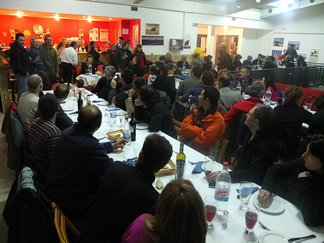
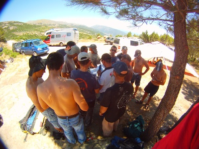

Vídeo y tracks del Nicopress Xpress 30/06/2012
El pasado sábado éramos poquitos en el despegue y la mitad habíamos subido un poco tarde, pero aún así nos pusimos una prueba para celebrar el Nicopress Xpress, prestigiosa prueba del Tiétar en la que el ganador es obsequiado con una revisión rápida de sus nicopresses… :-)
- Start en el campo de fútbol (como viene siendo habitual),
- La Excusa (vértice geodésico),
- Volver hasta La Abantera,
- Gol en La Iglesuela.
El único que completó la prueba fue Julio López, que como de costumbre rodeo la penúltima baliza, La Abantera, lléndose ya que estaba hasta Arenas de San Pedro. Fue el ganador del Nicopress Xpress y todos sabemos que le debemos la revisión.
Carlos Crespo que no tenía metidas las balizas y decidió no hacer la prueba se pegó un vuelazo de casi cinco horas, acercándose mucho a todas las balizas y aterrizando finalmente en el “gol”. Con un start de 1000 metros puntuaría distancia mínima, pero si lo subimos a 1600 metros quedaría en tercera posición, injustamente por detrás de Carlos “parapen”, que se acercó un poquito más que él al vértice geodésico.
Y para ver lo injusto de esa tercera posición, en auténtica primicia, tenemos el comparador de tracks que estamos poniéndo en marcha para el próximo Open, en el que se pueden comparar sobre el mapa los vuelos de tres pilotos.
Aquí tenéis la clasificación completa de la prueba, y aquí los tracks de todos los pilotos que volamos ese día.
Y como no, el pedazo de vídeo que grabó ese día Carlos “parapen”. Le daremos por buena esa seguna posición por lo bien que le ha quedado:
Comentar noticiaFotos del Open de Javi 'Yunquera' 29/06/2012
Javi "Yunquera" en el Open hizo fotos a gran parte del personal y de la cena, de la que no teníamos ninguna foto por ahora. No os perdáis la foto de Armando y Juanito, no tiene desperdicio. Pinchando en la foto de abajo llegaréis al álbum donde están todas las demás.

Comentar noticia
¡Gracias Javi!
Resultados del Torneo "Puspín de Oro" 18/06/2012
El pasado sábado nos juntamos un buen grupo de alas y decidimos poner la siguiente prueba:
- Start en el campo de fútbol de 1km.
- La Escusa (punto geodésico)
- Higuera de las Dueñas
- Almendral de la Cañada
- Gol en La Iglesuela
Julio "Ávila" (track naranja en el mapa) completó la prueba pero no marcó correctamente las dos últimas balizas (pasándose la de Higuera y quedándose a 50 metros de la de Almendral).
Antonio "Lechón" (track azul en el mapa) marcó correctamente todas las balizas pero desde Higuera se dirigió a La Igle sin pasar por Almendral. Sería el vencedor del Puspín de Oro de no ser por la penalización de ala rígida.
Y con esas circunstancias resulta que son Armando (track verde oscuro) y Julio Sancho (track verde claro) los que finalmente quedan como campeón y subcampeón del Torneo Puspín de Oro.
Además de los campeones a Higuera llegamos Paco "Yecla", Carlos "parapen", Juan, Carlos Crespo y Nando, aunque Juan y Carlos Crespo no marcaron bien la baliza del punto geodésico y Carlos "parapen" se quedó sin Compeo al cruzar Mijares y no pudo entregar su track.
Aquí tenéis la clasificación completa de la prueba.
Aquí tenéis las fotos que hizo Carlos "parapen".
Y aquí los tracks de todos los pilotos.